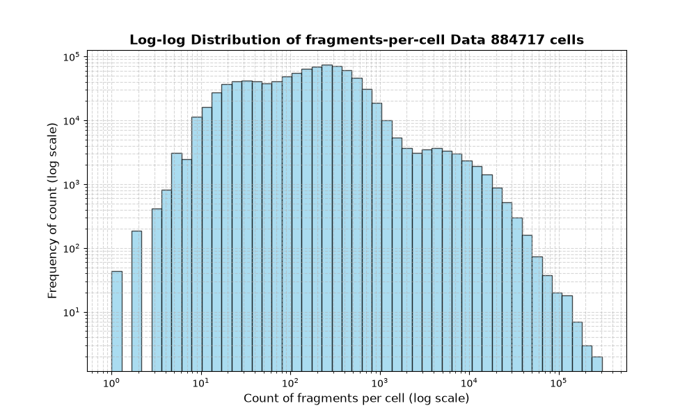
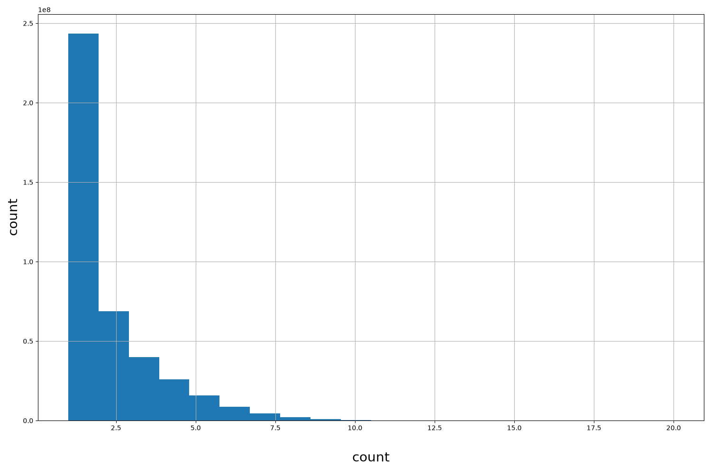
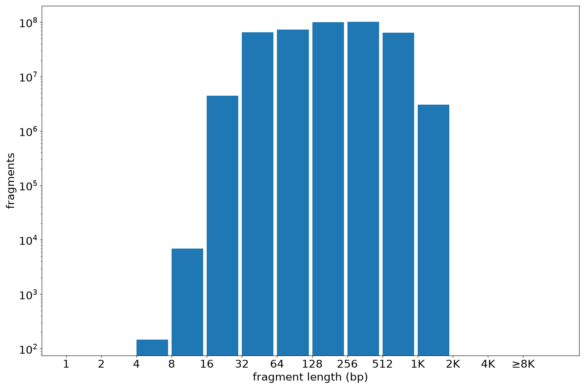

Resource
| Id | summary/liu2026Multiomics/atac_fragments/T49_b18_Lung_PCW20 |
|---|---|
| Type | fragment_score |
| Version | 0 |
| Summary | Sample ATAC fragments for T49_b18_Lung_PCW20 from liu2026Multiomics. |
| Description |
Downloaded from: https://zenodo.org/records/15066651. Genomic coordinates in fragment files are 0-based. |
| Labels |
|
Scores (2)
| ID | Type | Default annotation | Description | Histogram | Range | Summary |
|---|---|---|---|---|---|---|
| cell | str |
cell |
 |
CL134_C06+C07+A10, CL135_C06+H08+G07, CL140_C05+F08+G06, CL133_C01+B12+D12, CL136_C05+C08+G07 (top 5 of 884717 values) | ||
| count | int |
count |
 |
[1, 24] |
|
n counts fragments; sd is the population standard deviation.
Fragments
| Chromosome | Fragments |
|---|---|
| all chromosomes | 411206105 |
| chr1 | 37006848 |
| chr1_KI270706v1_random | 2141 |
| chr1_KI270707v1_random | 385 |
| chr1_KI270708v1_random | 245 |
| chr1_KI270709v1_random | 2105 |
| chr1_KI270710v1_random | 108 |
| chr1_KI270711v1_random | 1099 |
| chr1_KI270712v1_random | 1332 |
| chr1_KI270713v1_random | 17817 |
| chr1_KI270714v1_random | 3901 |
| chr2 | 31781703 |
| chr2_KI270715v1_random | 157 |
| chr2_KI270716v1_random | 216 |
| chr3 | 26017103 |
| chr3_GL000221v1_random | 532 |
| chr4 | 19919880 |
| chr4_GL000008v2_random | 3910 |
| chr5 | 21446345 |
| chr5_GL000208v1_random | 1657 |
| chr6 | 23421179 |
| chr7 | 20986716 |
| chr8 | 17619642 |
| chr9 | 17553889 |
| chr9_KI270717v1_random | 274 |
| chr9_KI270718v1_random | 273 |
| chr9_KI270719v1_random | 2599 |
| chr9_KI270720v1_random | 941 |
| chr10 | 18849797 |
| chr11 | 21731054 |
| chr11_KI270721v1_random | 1504 |
| chr12 | 19786548 |
| chr13 | 10663718 |
| chr14 | 13303383 |
| chr14_GL000009v2_random | 2372 |
| chr14_GL000194v1_random | 4687 |
| chr14_GL000225v1_random | 6256 |
| chr14_KI270722v1_random | 1807 |
| chr14_KI270723v1_random | 870 |
| chr14_KI270724v1_random | 427 |
| chr14_KI270725v1_random | 1144 |
| chr14_KI270726v1_random | 529 |
| chr15 | 12228628 |
| chr15_KI270727v1_random | 441 |
| chr16 | 14663105 |
| chr16_KI270728v1_random | 1241 |
| chr17 | 19410955 |
| chr17_GL000205v2_random | 22972 |
| chr17_KI270729v1_random | 3995 |
| chr17_KI270730v1_random | 1097 |
| chr18 | 8978522 |
| chr19 | 19131559 |
| chr20 | 10167009 |
| chr21 | 4734066 |
| chr22 | 8153900 |
| chr22_KI270731v1_random | 337 |
| chr22_KI270732v1_random | 1479 |
| chr22_KI270733v1_random | 91920 |
| chr22_KI270734v1_random | 1095 |
| chr22_KI270735v1_random | 1663 |
| chr22_KI270736v1_random | 4883 |
| chr22_KI270737v1_random | 386 |
| chr22_KI270738v1_random | 1040 |
| chr22_KI270739v1_random | 16 |
| chrM | 4093717 |
| chrUn_GL000195v1 | 23876 |
| chrUn_GL000213v1 | 170 |
| chrUn_GL000214v1 | 858 |
| chrUn_GL000216v2 | 1831 |
| chrUn_GL000218v1 | 3364 |
| chrUn_GL000219v1 | 14959 |
| chrUn_GL000220v1 | 7341 |
| chrUn_GL000224v1 | 4581 |
| chrUn_GL000226v1 | 18 |
| chrUn_KI270302v1 | 3 |
| chrUn_KI270303v1 | 5 |
| chrUn_KI270304v1 | 5 |
| chrUn_KI270305v1 | 5 |
| chrUn_KI270310v1 | 19 |
| chrUn_KI270311v1 | 11 |
| chrUn_KI270315v1 | 6 |
| chrUn_KI270316v1 | 1 |
| chrUn_KI270317v1 | 2 |
| chrUn_KI270320v1 | 51 |
| chrUn_KI270322v1 | 34 |
| chrUn_KI270329v1 | 1 |
| chrUn_KI270330v1 | 175 |
| chrUn_KI270333v1 | 94 |
| chrUn_KI270336v1 | 59 |
| chrUn_KI270337v1 | 159 |
| chrUn_KI270362v1 | 7 |
| chrUn_KI270363v1 | 10 |
| chrUn_KI270366v1 | 14 |
| chrUn_KI270378v1 | 1 |
| chrUn_KI270381v1 | 1 |
| chrUn_KI270382v1 | 6 |
| chrUn_KI270384v1 | 6 |
| chrUn_KI270385v1 | 3 |
| chrUn_KI270387v1 | 1 |
| chrUn_KI270389v1 | 1 |
| chrUn_KI270390v1 | 2 |
| chrUn_KI270393v1 | 4 |
| chrUn_KI270394v1 | 2 |
| chrUn_KI270395v1 | 1 |
| chrUn_KI270396v1 | 1 |
| chrUn_KI270411v1 | 12 |
| chrUn_KI270412v1 | 1 |
| chrUn_KI270414v1 | 6 |
| chrUn_KI270417v1 | 41 |
| chrUn_KI270418v1 | 15 |
| chrUn_KI270419v1 | 3 |
| chrUn_KI270420v1 | 24 |
| chrUn_KI270422v1 | 30 |
| chrUn_KI270423v1 | 11 |
| chrUn_KI270424v1 | 6 |
| chrUn_KI270425v1 | 5 |
| chrUn_KI270429v1 | 58 |
| chrUn_KI270435v1 | 1520 |
| chrUn_KI270438v1 | 11364 |
| chrUn_KI270442v1 | 11424 |
| chrUn_KI270448v1 | 222 |
| chrUn_KI270465v1 | 17 |
| chrUn_KI270466v1 | 1154 |
| chrUn_KI270467v1 | 3473 |
| chrUn_KI270468v1 | 123 |
| chrUn_KI270507v1 | 184 |
| chrUn_KI270508v1 | 105 |
| chrUn_KI270509v1 | 88 |
| chrUn_KI270510v1 | 47 |
| chrUn_KI270511v1 | 148 |
| chrUn_KI270512v1 | 291 |
| chrUn_KI270515v1 | 213 |
| chrUn_KI270516v1 | 52 |
| chrUn_KI270517v1 | 140 |
| chrUn_KI270518v1 | 75 |
| chrUn_KI270519v1 | 2566 |
| chrUn_KI270521v1 | 101 |
| chrUn_KI270522v1 | 37 |
| chrUn_KI270528v1 | 1 |
| chrUn_KI270529v1 | 7 |
| chrUn_KI270530v1 | 8 |
| chrUn_KI270538v1 | 1911 |
| chrUn_KI270539v1 | 7 |
| chrUn_KI270544v1 | 5 |
| chrUn_KI270579v1 | 8 |
| chrUn_KI270580v1 | 70 |
| chrUn_KI270581v1 | 6 |
| chrUn_KI270582v1 | 16 |
| chrUn_KI270583v1 | 72 |
| chrUn_KI270584v1 | 180 |
| chrUn_KI270587v1 | 24 |
| chrUn_KI270588v1 | 222 |
| chrUn_KI270589v1 | 279 |
| chrUn_KI270590v1 | 170 |
| chrUn_KI270591v1 | 314 |
| chrUn_KI270593v1 | 82 |
| chrUn_KI270741v1 | 69 |
| chrUn_KI270742v1 | 1782 |
| chrUn_KI270743v1 | 2093 |
| chrUn_KI270744v1 | 4009 |
| chrUn_KI270745v1 | 232 |
| chrUn_KI270746v1 | 2347 |
| chrUn_KI270747v1 | 280 |
| chrUn_KI270748v1 | 140 |
| chrUn_KI270749v1 | 1534 |
| chrUn_KI270750v1 | 2585 |
| chrUn_KI270751v1 | 2216 |
| chrUn_KI270753v1 | 275 |
| chrUn_KI270754v1 | 749 |
| chrUn_KI270755v1 | 277 |
| chrUn_KI270756v1 | 527 |
| chrUn_KI270757v1 | 940 |
| chrX | 8790477 |
| chrY | 459497 |
| chrY_KI270740v1_random | 331 |
Fragment lengths
| fragments | min | max | mean | median | |
|---|---|---|---|---|---|
| fragments | 411206105 | 7 | 1992 | 275.48 | 206 |

Files
| Filename | Size | md5 |
|---|---|---|
| T49_b18_Lung_PCW20.fragments.tsv.gz | 3.66 GB | 14940c7629fdc189c4d52e2e87b86a47 |
| T49_b18_Lung_PCW20.fragments.tsv.gz.tbi | 1.48 MB | 77972a1eda8e30652aeae8d39491aa26 |
| fragment_count_dist_plot.py | 853.0 B | 9d735ee8c687286d50484e7f1e398e60 |
| genomic_resource.yaml | 1.33 KB | 7373c54163f7c1c36fa9ed3235b29216 |
| statistics/ |